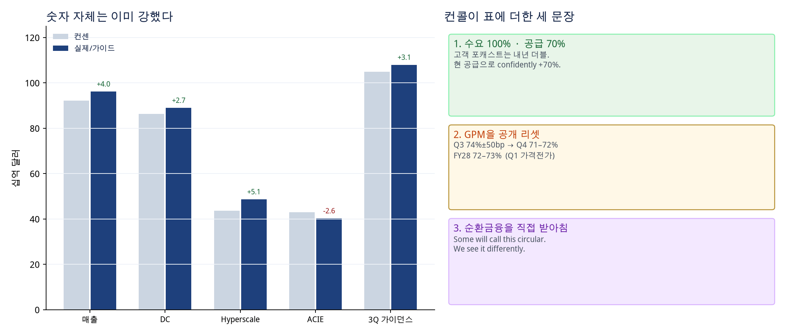
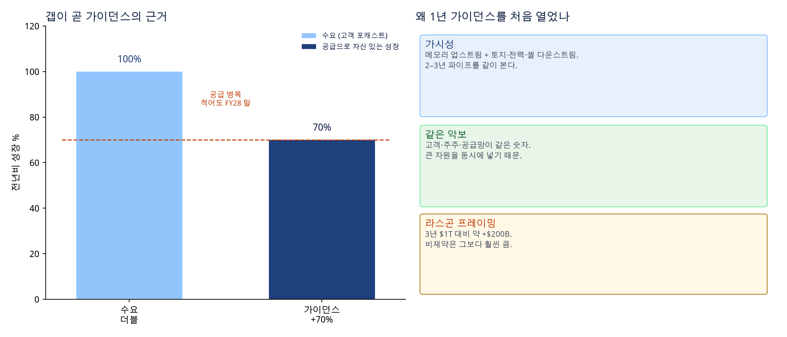
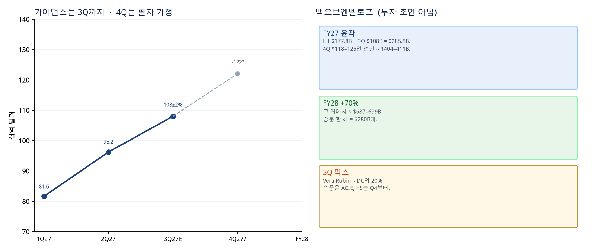
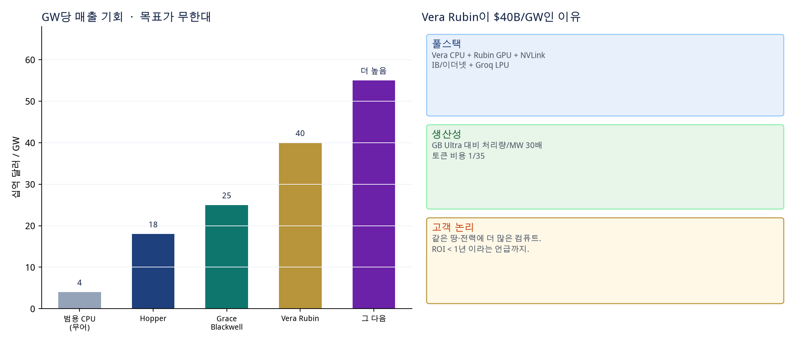
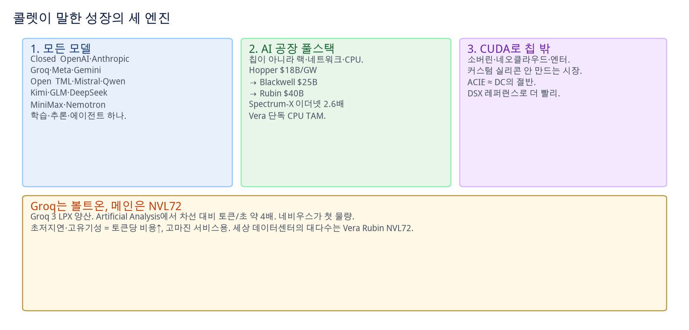
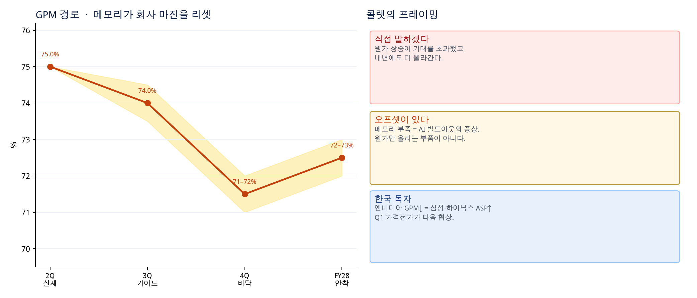
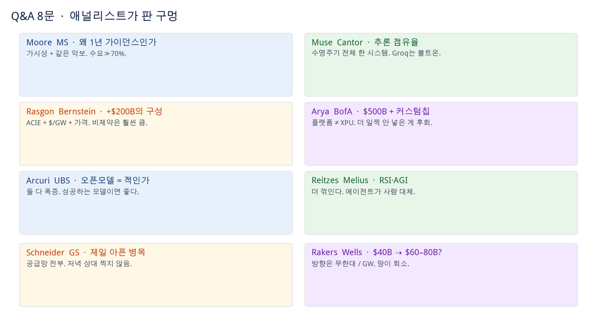
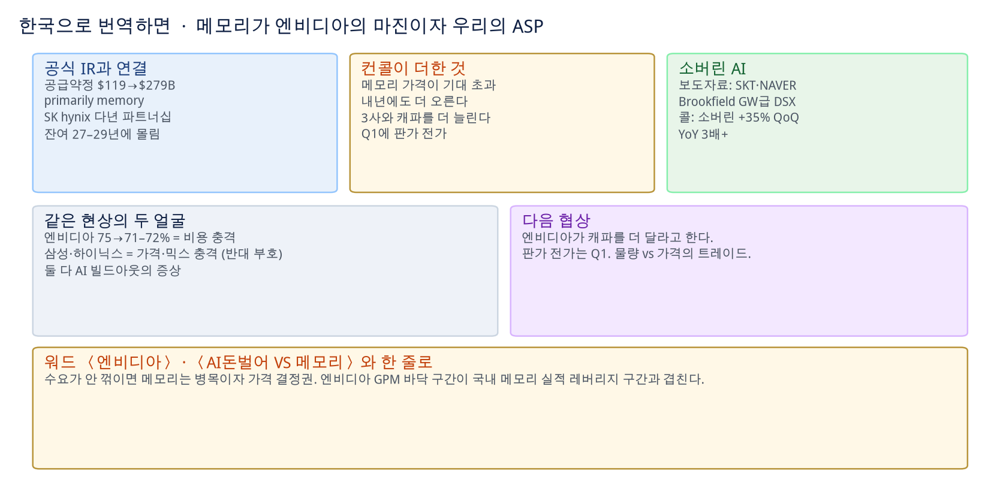
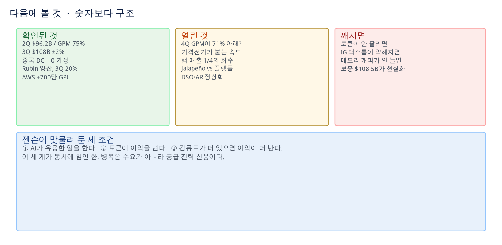

엔비디아 FY27 2Q 컨콜 분석 · 2026.08.26 17:00 EDT · Quartr 트랜스크립트 + 공식 보도자료 · 매수·매도 추천 아님
엔비디아 FY27 2Q 컨콜 분석
수요 100% · 공급 70% · 마진은 메모리가 리셋한다
2026. 8. 26 17:00 EDT 컨퍼런스콜 (Quartr) + NVIDIA 보도자료·손익/재무 표.
8/26 Quick 코멘트의 공식 IR 심층($279B 약정·$108.5B 보증)을 대체하지 않고, 콜에서만 열린 문장을 한글로 푼다.
매수·매도 추천이 아니다.
2Q 매출$96.22B+106% YoY · +18% QoQ
3Q 가이던스$108B ±2%중국 DC 컴퓨트 = 0
FY28 성장+70%공급제약 · 수요는 더블
GPM 바닥4Q 71–72%3Q 74% → FY28 72–73%
Data Center$89.02BHS $48.71 · ACIE $40.31
Vera Rubin 3QDC의 20%8월 초 양산 · 사상 최속 램프
프론티어 랩내년 ≈ 1/4지분 ~$50B + 신용·사이트
주주환원 2Q$26.0B자사주 $20B · 배당 $6B
0. 한 줄
숫자는 이미 강했다. 컨콜이 새로 찍은 것은 세 개다.
① 고객 수요는 내년 더블인데 회사는 공급으로 +70%만 자신한다 —
처음으로 1년 가이던스를 연 이유이기도 하다.
② 총마진을 메모리 때문에 공개 리셋한다 — 질질 끌지 않겠다고 콜렛이 먼저 말했다.
③ 순환금융 비판을 직접 받아쳤다 — 플랫폼 전환기이고, 출하분은 IG 또는 IG 백스톱 고객이 소비하며, 장비는 전용 가능하다는 주장.
강함
4분기 연속 성장 가속. ACIE가 DC의 절반으로 가고 연 100% 성장.
GW당 매출 기회가 Hopper $18B → Blackwell $25B → Rubin $40B.
AWS +200만 GPU, OpenAI 약 12GW, 네오클라우드 3→8GW.
긴장
GPM 75→71–72. DSO 45→60일, AR $63.1B.
프론티어 랩에 밸런스시트를 쓰는 매출이 내년 약 1/4.
중국은 전망에서 제거. 커스텀칩(Jalapeño 등)은 “플랫폼이 다르다”로 넘김.
1. 스코어카드 — 공식 표
콜은 반올림($96B, 재고 $32B). 아래는 보도자료 원표.

컨센 대비 매출·3Q 가이던스 상회. ACIE만 컨센($42.94B)을 하회($40.31B) — 콜 톤과 달리 숫자로는 유일한 흠.
Most people see just hyperscalers. That is half of the picture. The other half … they do not buy custom chips.
Jensen Huang, Stacy Rasgon 질문에 대한 답
Hyperscale $48.7B
Blackwell 지속. 클라우드 산업 백로그 > $2T.
톱5 캡엑스 2026 ≈ $8,000억, 2027 ≈ $1.3조.
“GPU가 켜지면 그들의 매출·마진이 같이 올라간다” — 그래서 레이스.
ACIE $40.3B
네오클라우드 + 산업 + 엔터프라이즈.
하이퍼스케일러가 자체 빌드를 보완하려고 사는 용량도 포함.
DSX 레퍼런스로 더 싸고 빠르게 온라인.
소버린은 주로 지역 네오클라우드로, +35% QoQ · YoY 3배+.
엔터프라이즈 TTM · 스타트업
온프레미스 자동차 수직 $8B, 금융+제조+헬스케어 합산 $7B.
AI VC 자금 2026 상반기 $4,000억(2025년 전체 $2,650억 초과), 약 70%가 컴퓨트.
ARR $10억 이상 약 20개사(Cursor·Figma·Together AI 등; 콜 원문은 Cursor를 SpaceX 소유로 언급).
수직 엔터프라이즈 소프트웨어가 가장 빠른 성장.
4. 왜 +70%인가 — 수요가 아니라 공급의 숫자

조 무어(MS): 왜 1년 가이던스를 처음 열었고, 갭을 메울 수 있나.
수요 쪽
에이전트는 사람 대비 컴퓨트 15–100배.
모델은 더 크고, 추론·툴 사용이 여러 턴.
ACIE는 연 100%. 올해 YoY도 약 100%.
가시성 쪽
예전엔 “칩 회사가 왜 메모리 업체와 저녁을 먹나”.
지금은 발전기·토지·전력·셸까지.
파이프가 2–3년이라 1년 숫자를 걸 수 있다.
병목 쪽
슈나이더(GS)가 순위(전력/DRAM/웨이퍼)를 물었다.
젠슨은 특정 공급사를 찍지 않음.
“공급망 전부가 풀가동. 70%분 이상은 있지만 약 70%.”

4Q $122B는 필자 가정. 공식 숫자는 3Q $108B ±2%와 FY28 +70%뿐.
백오브엔벨로프 · 투자 조언 아님
H1 $177.8B + 3Q $108B = $285.8B. 4Q를 $118–125B로 두면 FY27 ≈ $404–411B.
그 위 +70%면 FY28 ≈ $687–699B, 한 해 증분 ≈ $280B대.
라스곤은 “기존 3년 $1T 대비 약 +$200B”로 들었다.
비제약 수요는 “훨씬 크다” — 회사가 숫자를 안 박았다.
5. $18B → $25B → $40B/GW

레이커스(Wells): $40B가 $60–80B로 가나. 답: 목표는 1GW에 무한대.
The perfect answer is actually infinity per gigawatt. If we could literally get $1 trillion of compute into 1 GW and one piece of Land, Power, and Shell, it would be a fantastic outcome.
Aaron Rakers 질문. 마지막 답변은 트랜스크립트가 “producti”에서 끊김.
Vera Rubin = Vera CPU + Rubin GPU + NVLink + IB 또는 이더넷 + Groq LPU.
네트워킹만 스케일업·스케일아웃·보안·멀티캠퍼스까지 가면 “다섯 종류”라는 식.
GB Ultra 대비 처리량/MW 30배, 토큰 비용 1/35.
같은 땅의 달러 밀도가 올라가는 한, 고객은 다음 세대로 달려간다.
데이터센터 투자 규모 자체는 “5년 전 $30B/GW → 지금 $60B/GW”로도 말했다 — NVIDIA 매출 노출($40B)과 고객 총투자($60B)를 섞어 듣지 말 것.
커스텀칩과의 선 긋기
아리아(BofA): OpenAI Jalapeño가 Blackwell보다 낫다고 했는데 왜 투자하나.
젠슨: XPU는 한 클라우드·한 서비스의 추론 특화. NVIDIA는 수명주기 전체·모든 클라우드의 공장 플랫폼.
“100% 확신한다. 안 넣은 게, 더 일찍 안 넣은 게 후회다. 두 곳은 곧 상장할 것.”
필자: 기술 우위를 숫자로 증명한 답은 아니다. 전략 포지션 답이다.
6. 세 엔진 + Groq는 볼트온

엔진
콜 문장
왜 중요한가
모든 모델
Closed·Open, 소형·초대형, AR·확산, 클라우드·엣지, 학습·추론·에이전트.
오픈모델 확산을 “프론티어 랩에 부정”으로 보는 투자자에게 정면 반박 (아큐리).
풀스택 TAM
네트워킹 또 한 분기 최고, Spectrum-X 이더넷 YoY 2.6배. Grace TTM > $5B. Vera 단독 출하 (OCI, SpaceXAI, AWS).
서버 CPU TAM ≈ $20B, FY28 CPU 매출 두 배 이상. GPU 밖 레버.
CUDA 바깥 시장
커스텀 실리콘 의사가 없는 소버린·네오클라우드·엔터.
ACIE ≈ DC 절반. 이 쪽이 안 보이면 수요를 하이퍼스케일 CAPEX로만 깎는다.
추론 점유율 (뮤즈)
수명주기가 데이터 준비 → 사전학습 → 사후학습 → 에이전트 추론 네 국면으로 복잡해졌다.
NVL72 3세대가 한 시스템으로 국면을 넘긴다. $60B급 자산을 한 모델·한 국면에 묶지 않는 것이 이점.
Groq 3 LPX는 초저지연·토큰 유기성. 토큰당 비용은 더 높고, 고마진 서비스에 붙인다.
세상 데이터센터의 대다수는 Vera Rubin NVL72.
7. 마진 리셋 — 메모리를 숨기지 않음

2Q 75%는 믹스 유사로 보합. 리셋은 가이던스부터.
We want to be direct about this rather than let it linger as an open question. … Tighter memory supply is a symptom of the same demand surge that is driving our own growth.
Colette Kress, prepared remarks
경로
3Q 74.0% ±50bp → 4Q 바닥 71–72% → FY28 72–73%.
“이미 집행한 가격인상”이 Q1에 들어간다.
메모리 가격 상승폭이 기존 기대를 초과했고 내년에도 더 오른다.
그 외 P&L
3Q OpEx GAAP $9.2B / Non-GAAP $9.0B.
FY OpEx 성장 low 50s — 포트폴리오 확대 + AI 툴이 엔지니어링 생산성을 올린다는 논리.
FY27 세율 16–18%. 2Q Non-GAAP 유효세율 16%.
3Q 백오브엔벨로프 · 투자 조언 아님
$108B × 74% ≈ 매출총이익 $80B − Non-GAAP OpEx $9.0B ≈ 영업이익 $71B.
2Q Non-GAAP OP $64.0B에서 한 단 위. 마진은 내려가도 절대 이익은 매출이 받친다 — 4Q 71%대까지 이 산술이 유지되는지가 다음 시험.
기술·고객 수요가 아니라 대차대조표와 신용이 한계라는 진단.
그래서 지분 약 $50B(같은 기간 FCF의 일부) + Apollo·BlackRock·Blackstone·Brookfield·GS·KKR로 제3자 자본 $5,000억+.
SoftBank Energy 오하이오 PORTS-Pike: 4.25GW, OpenAI 이용, 세대당 ≈ 150만 GPU, 20년 여러 교체.
OpenAI 기존+계획 ≈ 12GW. 다른 랩에는 약 2GW 선택적 신용보강 (자체 조달 분은 별도).
We recognize the scale of this support, and we know some will call this circular financing. We see it differently. … our risk is limited. The NVIDIA Compute platform is fungible and durable and can be redeployed.
콜렛. 이어서: 밸런스시트를 쓰는 랩 수요 ≈ 내년 사업의 1/4. 출하분은 IG 또는 IG 백스톱 고객이 소비.
네오클라우드 — 두 번 받기
렌더는 단일 장기 offtake를 원한다. 엔비디아는 일부 용량에 take-or-pay 최저수익을 걸어 대출을 가능하게 하고, 플로어 위 렌탈을 나눈다.
“대출은 안 한다. 독립 자본이 건별로 심사한다.”
하드웨어 한 번 + 사용량 연동 수익 한 번. 중장기 billions 잠재.
공식 IR의 AI 클라우드 $36B(선매출+조건부 제3자 공유)와 같은 줄기.
운전자본
재고 $21.4B(FY26말)→$31.6B — Vera Rubin 준비. 콜은 $32B.
DSO 60일. 일부 IG 고객의 복수 분기 출하 + 연장 결제.
AR $63.1B. 2Q 매출채권 현금 환산 −$22.3B가 OCF를 짓밟음.
환원 vs 전략
2Q 환원 $26.0B(자사주 $19.7B + 배당 $6.0B). YTD FCF의 60%(정책 50%+).
“전략적 사용 후 초과 FCF를 더 돌려주겠다.”
시니어노트 $25B, Groq, Inc. 현금 −$2.94B. 잔여 자사주 한도 $99.0B.
9. Q&A 8문 — 애널리스트가 판 구멍

#
누가
무엇을 찔렀나
답이 닫은 것 / 남긴 것
1
Joseph Moore, MS
1년 가이던스의 자신감, 제약, 갭 축소
닫음: 가시성·같은 악보. 남김: 70%를 언제 어떻게 올릴지 일정 없음.
2
C.J. Muse, Cantor
추론 점유율, 에이전트, Groq, ACIE
닫음: 한 공장으로 네 국면. Groq는 볼트온. 남김: 추론 점유율 % 없음.
3
Stacy Rasgon, Bernstein
+$200B 구성, 가격, 비제약 수요
닫음: ACIE + $/GW + 하이퍼스케일 동시. 남김: 비제약은 “훨씬 큼”뿐.
4
Vivek Arya, BofA
$500B이 전부인가, FY28 현금, 커스텀칩
콜렛: 공급약정이 Rubin·내년 램프에 필수, 앞 3년에 몰림. 젠슨: 플랫폼 ≠ XPU. FY28 현금 유출 스케줄은 미제시.
5
Timothy Arcuri, UBS
오픈모델 = 프론티어 랩에 부정?
둘 다 폭증. 오픈은 스타트업·국가·사이버의 기반. “성공하는 모델이면 좋다.”
6
Ben Reitzes, Melius
RSI · AGI가 수요를 꺾나
더 꺾인다. 에이전트가 상시 가동. AGI 이정표는 “이제 무의미”. 유용·흑자 토큰·더 많은 컴퓨트 세 조건.
7
Jim Schneider, GS
전력·DRAM·웨이퍼 중 최악
특정 이름 거부(“저녁 상대 주가가 다음날 더블”). 전부 풀가동. 캐파는 매일 조금씩.
8
Aaron Rakers, Wells
$/GW가 60–80으로 가나, 공급이 선형인가
방향은 무한대/GW. 땅이 희소하므로 밀도. 트랜스크립트는 ROI<1년 언급 중 절단.
젠슨의 수요 철학 — 에이전트 이후
“지난달에 넘어갔다. 이제 대부분의 AI는 에이전트다.”
직원 4만 → 에이전트 40만·400만. DGX Station에서 24/7.
매 턴 스킬 파일을 갱신하는 “거친 자기개선”.
업계에 남는 것은 세 조건뿐: 유용한 일, 흑자 토큰, 컴퓨트가 더 있으면 이익이 더 남.
RSI/AGI는 수요를 꺾는 이벤트가 아니라 같은 플라이휠의 가속.
10. 한국으로 번역

같은 현상의 반대 부호
엔비디아 GPM 75→71–72% = 메모리 원가 충격.
삼성·하이닉스 = 가격·믹스 충격 (반대 부호).
콜렛 문장 그대로 메모리 부족은 AI 빌드아웃의 증상이지, 오프셋 없는 원가 항목이 아니다.
공식 IR과 겹치는 곳
공급·캐파 $119B→$279B, primarily memory, 잔여 FY27–29에 $92+$87+$88B.
SK hynix 다년 파트너십. SKT·NAVER·Brookfield GW급 소버린.
콜의 “3사와 캐파를 더 늘린다” = 국내 증설·HBM 협상의 수요 쪽 근거.
다음 협상은 물량 vs 가격이다. 엔비디아는 캐파를 더 원하고, 이미 판가 전가를 Q1에 넣어 두었다.
국내 메모리에 유리한 구간은 엔비디아 마진 바닥(4Q–FY28 초)과 겹칠 수 있다.
반대로 캐파가 갑자기 늘거나 AI 토큰 이익이 꺾이면, 이 대칭은 같이 무너진다.
워드: 〈엔비디아〉 · 〈AI돈벌어 VS 메모리 업체 추가 기대는 얼마나〉.
11. 체크리스트

구분
내용
확인
2Q $96.22B, 3Q $108B ±2%, 중국 0, Rubin 3Q DC 20%, AWS 200만, GPM 경로 공개, FY28 +70%는 공급 숫자.
3Q 실적에서
Rubin 믹스가 20%를 넘나. ACIE가 정말 순증의 주역인가. GPM이 73.5% 아래로 먼저 가나.
4Q
바닥 71–72%가 바닥인가, 통과점인가. 하이퍼스케일 재가속. 가격전가 프리뷰.
FY28
+70%를 올리거나 내리는 공급 업데이트. CPU 더블. 랩 1/4의 회수·전용.
깨짐
토큰 이익 소멸, IG 백스톱 약화, 메모리 캐파 비가동, 오하이오 보증 현실화, 커스텀칩이 학습까지 잠식.
필자
콜의 톤은 “자신감 뿜뿜”이 맞다. 다만 자신감의 대상이 수요가 아니라 공급을 70%로 고정해도 되는 가시성이다.
투자 논쟁은 이제 “AI가 쓰이나”가 아니라 “누가 신용을 대고, 마진을 누구에게 넘기나”로 이동했다.
매수·매도 추천이 아니다.
출처 · 잘린 부분
NVIDIA, Announces Financial Results for Second Quarter Fiscal 2027, 2026-08-26. 매출 $96,221M, DC $89.0B, 가이던스, 재무상태표·현금흐름.